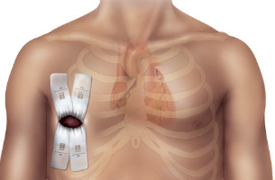
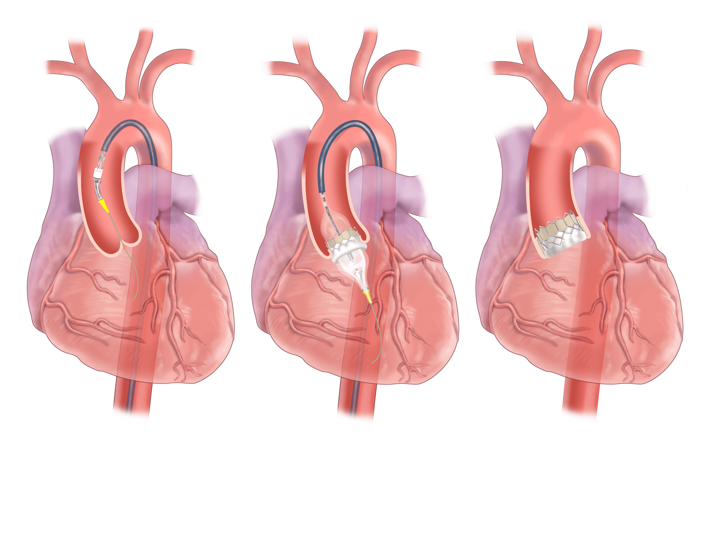
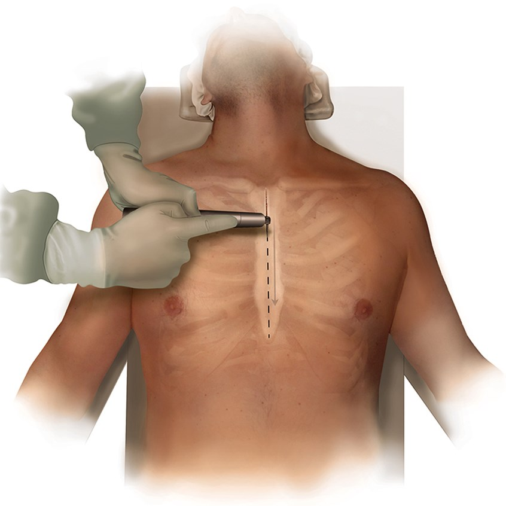
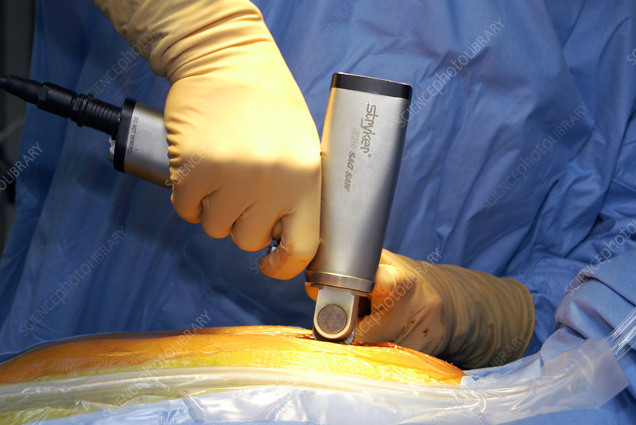
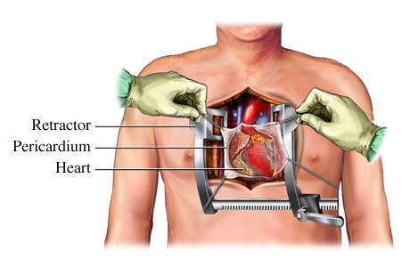

Prime Surgical
Knowledge & Training
Surgical Interventions in Cardiac Diseases: CABG, Valve Replacements, Transcatheter Interventions
The realm of cardiac surgery has evolved significantly, with a spectrum of surgical interventions available to manage and treat various cardiac diseases. In this module, we will delve into three pivotal procedures: Coronary Artery Bypass Grafting (CABG), Valve Replacements, and Transcatheter Interventions.
As we covered in the anatomy module, the heart is a complex system composed of two pumps. It uses coordinated electrical impulses to more blood through the pressure-valve system. Ischemic diseases require intervention of the pipes, or blood vessels. Valvular diseases require intervention of the valves.
As the procedural protocol has evolved throughout the last few decades, surgeons have often partnered with industry to develop the tools and methods to perform specifed aspects of the procedures. In this section I will highlight some of the key concepts in cardiac surgery and the products that are used to perform the procedures.
This is a percursor to the next section, where we will explore our portfolio, and get more into the specifics, strategy, and prefrence profiles of the surgeons and teams we work with.

Overview: Common Procedures
-
Coronary Artery Bypass Grafting (CABG):
- Objective: CABG aims to restore blood flow to ischemic myocardium by bypassing obstructed coronary arteries.
- Procedure:
- Autologous vessels, usually the internal mammary artery or saphenous vein, are harvested.
- The patient is often placed on cardiopulmonary bypass (CPB).
- The harvested vessel is grafted to the aorta and the site past the obstruction, bypassing the stenotic areas.
- Indications: Significant obstruction in the coronary arteries, particularly in patients with left main coronary disease or severe triple-vessel disease.
- Outcomes: CABG has been shown to improve survival and quality of life in individuals with advanced coronary artery disease.

-
Valve Replacements & Repairs:
- Objective: To replace dysfunctional heart valves that are either stenotic or regurgitant, restoring normal hemodynamics.
- Procedure:
- Mechanical Valves: Known for durability but require lifelong anticoagulation to prevent thromboembolic events.
- Bioprosthetic Valves: Have lower thrombogenicity but are less durable than mechanical valves.
- Valve Repair: Involves various techniques to repair the native valve, such as commissurotomy, annuloplasty, or chordal reconstruction.
- Indications: Severe valvular stenosis or regurgitation affecting the patient's quality of life and cardiac function.
- Outcomes: Valve replacements significantly alleviate symptoms and improve survival, although they may require re-operation over time, especially bioprosthetic valves.

-
Transcatheter Interventions:
- Transcatheter Aortic Valve Replacement (TAVR):
- Objective: A less invasive alternative to surgical aortic valve replacement, especially beneficial for high-risk surgical candidates.
- Procedure: A bioprosthetic valve is delivered via a catheter, usually through the femoral artery, and is deployed in the position of the native aortic valve.

- Transcatheter Mitral Valve Repair (TMVr):
- Objective: To repair the mitral valve in a less invasive manner compared to traditional surgery.
- Procedure: Devices like the MitraClip are utilized to create a double-orifice valve, improving leaflet coaptation and reducing regurgitation.
- Percutaneous Coronary Interventions (PCI):
- Objective: To alleviate coronary artery obstructions, improving myocardial perfusion.
- Procedure: A stent is delivered to the site of obstruction and deployed to keep the artery open.
-
Post-operative Care:
- Monitoring: Continuous monitoring in the initial post-operative period is essential to identify and manage complications like arrhythmias, infections, or bleeding.
- Rehabilitation: Cardiac rehabilitation is pivotal for optimizing recovery, educating the patient on lifestyle modifications, and monitoring for any signs of disease recurrence or post-operative complications.
-
Future Trends:
- The advent of minimally invasive surgical techniques, robotic-assisted surgeries, and continuous advancements in transcatheter interventions herald an exciting era in cardiac surgery.
Understanding the intricacies, indications, and outcomes of these surgical interventions is foundational for future learning.
Key Concept: Suturing in Surgical Practice
Suturing, a fundamental skill in surgical practice, involves using a needle and thread to close incisions, repair tissues, and facilitate healing. In the context of cardiothoracic surgery, suturing is pivotal in ensuring the stability and integrity of repaired structures, such as vessels, heart valves, and tissue layers.

Types of Sutures
- Absorbable vs. Non-absorbable: Absorbable sutures are broken down by the body over time, while non-absorbable ones remain indefinitely and may require removal.
- Monofilament vs. Multifilament: Monofilament sutures consist of a single thread, while multifilament sutures are braided. Monofilament sutures are less prone to infection, while multifilament sutures provide better knot security.
- Natural vs. Synthetic: Sutures can be made from natural materials, like silk or catgut, or from synthetic materials, such as polypropylene or nylon.

Suture Sizing

With suture Size 0 is the baseline. Moving to the left (1, 2, 3, etc.) the suture gets larger. Moving to the right (1-0, 2-0, 3-0, etc.) the suture gets smaller.
For reference size 0 represents the "stay" sutures used for pericardial retraction, or the closure of large skin incisions. Size 2-0 is typically used to sew in biprosthetic valves. Size 7-0 is used to do a distal anastomosis in CABG. Size 5-0 or 6-0 is typically used to do a proximal anaostomosis in CABG.
The same sizing methodology works for the stainless steel sternal wires we will cover thoughout this curriculum. The most common size for sternal wire used is size 6, which is on the other side of the spectrum.
Key Suturing Techniques
-
Simple Interrupted Suture:
- Usage: Widely used for closing incisions and wound edges.
- Process: Individual stitches are placed and tied separately.
- Advantages: If one suture fails, the others remain intact.
-
Running or Continuous Suture:
- Usage: Useful for long incisions where speed is crucial.
- Process: A single suture thread is used to sew along the length of the wound without tying individual knots.
- Advantages: Quick and uses less suture material.
- Disadvantages: If the suture breaks, the entire line may fail.
-
Mattress Suture:
- Usage: Employed to approximate wound edges and distribute tension.
- Process: The suture is passed perpendicular to the wound, encompassing larger amounts of tissue.
- Advantages: Reduces tension across the wound and promotes healing.
-
Purse-String Suture:
- Usage: Commonly used in cardiovascular surgeries, such as securing heart valves or closing openings in vessels, such as the aorta following direct aortic cannulation.
- Process: A continuous circular suture is placed, which can be tightened like a drawstring.
- Advantages: Enables closure of circular defects or openings.

Suturing in Cardiothoracic Surgery
- Vascular Anastomosis: Suturing is vital in creating secure and patent connections between vessels, such as in CABG.
- Valve Replacement: Sutures are used to anchor prosthetic heart valves securely in place.
- Tissue Repair: Suturing facilitates the repair of damaged tissues, ensuring they heal appropriately.
- Closing Incisions: Ensuring that thoracic and sternotomy incisions are closed securely and neatly to promote healing and minimize scarring.
Considerations in Suturing
- Tissue Handling: Gentle and precise handling of tissues is crucial to minimize trauma and promote healing.
- Knot Tying: Secure and appropriately tensioned knots ensure the stability of the suture and prevent leakage, especially in vascular anastomoses.
- Suture Selection: Choosing the appropriate suture material and size is pivotal, considering the tissue type and desired duration of support.
In summary, suturing is an indispensable skill in surgery, with various techniques and materials tailored to the specific requirements of the procedure and tissue type. Mastery of suturing techniques is vital for surgeons to ensure optimal patient outcomes, particularly in the intricate and high-stakes context of cardiothoracic surgery.
Key Concept: Anatomy of the Sternum
The sternum, also known as the breastbone, is a flat bone that forms the anterior portion of the chest wall. It is a T-shaped bone that is divided into three parts: the manubrium, the body, and the xiphoid process.

Manubrium
The manubrium is the broad, superior segment of the sternum. It articulates with the clavicles at the sternoclavicular joints and with the costal cartilages of the first pair of ribs. The manubrium also has a number of important landmarks, including the jugular notch, which is located at the superior margin of the manubrium and lies between the two clavicles.

Body
The body of the sternum is the middle portion of the bone. It articulates with the costal cartilages of the second to seventh pairs of ribs. The body of the sternum is also the site of attachment for a number of muscles, including the pectoralis major, pectoralis minor, and sternocleidomastoid muscles.

Xiphoid process
The xiphoid process is the narrow, inferior segment of the sternum. It is a cartilaginous structure in children and young adults, but it ossifies (hardens) with age. The xiphoid process is the site of attachment for the diaphragm and the rectus abdominis muscles.
[Image of Xiphoid process anatomy]
Functions of the sternum
The sternum has a number of important functions, including:
- Protection: The sternum helps to protect the vital organs of the chest, including the heart, lungs, and major blood vessels.
- Support: The sternum provides support for the rib cage and helps to maintain the shape of the chest.
- Muscle attachment: The sternum is the site of attachment for a number of important muscles, including the pectoralis major, pectoralis minor, sternocleidomastoid, diaphragm, and rectus abdominis muscles.
Common injuries of the sternum
- Fracture: A fracture of the sternum can occur due to a traumatic injury, such as a car accident or a fall from a height.
Key Concept: Cardiothoracic Surgical Access
Cardiothoracic surgical access refers to the methods and approaches used by surgeons to gain access to the heart and surrounding structures within the thoracic cavity. The choice of surgical access is determined by various factors, including the type of cardiac surgery being performed, the patient's anatomy, and the surgeon's expertise. Below are some of the common approaches used in cardiothoracic surgery:
Relevant Procuct Catagories: sternal saws, sternal retractors, sternal closure wires, sternal closure cables, sternal closure plates, soft-tissue retractor

1. Sternotomy
- Process: A full sternotomy involves making a vertical incision along the midline of the chest, followed by the division of the sternum, to provide wide access to the heart and lungs.
- Usage: This approach is commonly used for various cardiac surgeries, such as coronary artery bypass grafting (CABG), valve replacements, and heart transplants.
- Advantages: It provides extensive visibility and access to the thoracic structures.
- Disadvantages: It involves a larger incision and can be associated with more pain and a longer recovery period post-surgery.


In a standard procedure, following the sternotomy, the sternum is divided using a sternal saw. The sternum is then retracted using a sternal retractor. The surgeon dissects down to the pericardium, which is a fibrous sac that surrounds the heart. The pericardium is opened and retracted using a "stay" suture (seen in image below) for visaibility and access to the heart. The surgeon then performs the surgical procedure on the heart. Following the procedure, the pericardium is closed, the sternum is approximated, and the sternum is closed using sternal closure wires, cables, or plates.
